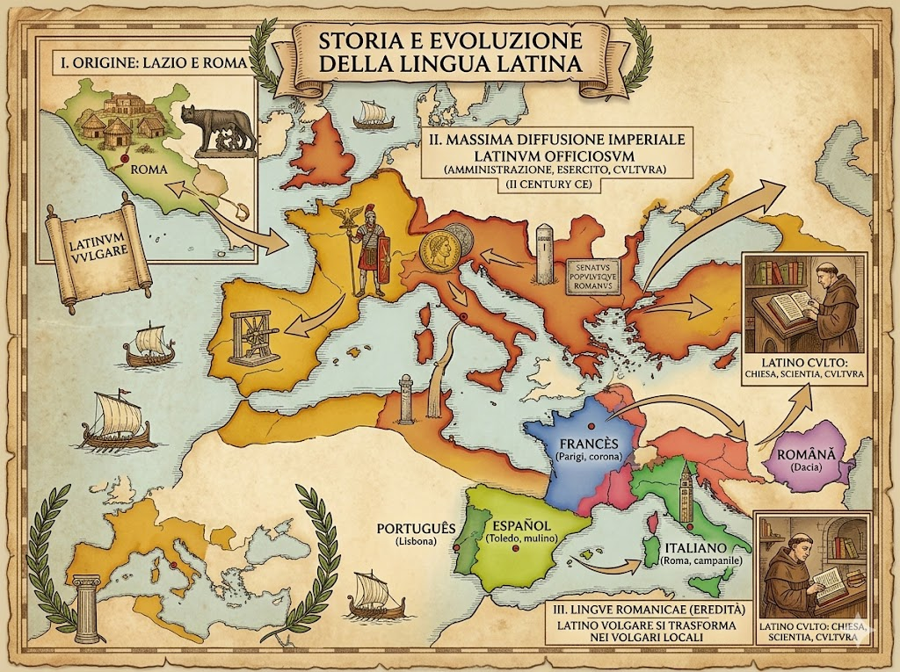
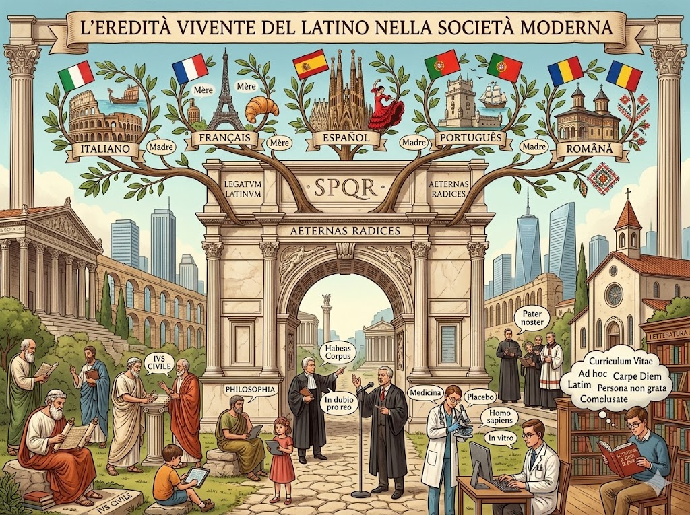
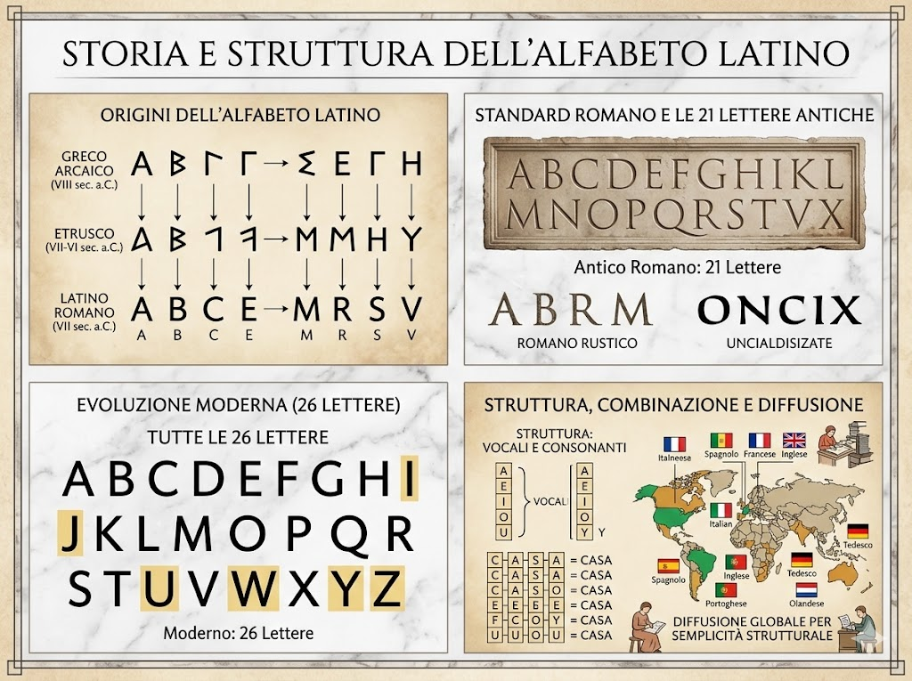

La storia della lingua latina ha origine nel Lazio, la regione dell’Italia centrale in cui sorse la città di Roma. Inizialmente parlato come lingua locale, il latino si diffuse progressivamente grazie all’espansione politica e militare di Roma, diventando la lingua ufficiale dell’Impero Romano. Con le conquiste romane, il latino si estese in gran parte dell’Europa, dell’Africa settentrionale e del Medio Oriente, affermandosi come lingua dell’amministrazione, dell’esercito e della cultura. Dopo la caduta dell’Impero Romano d’Occidente, il latino continuò a essere utilizzato come lingua della Chiesa, della cultura e della scienza per molti secoli. Nel frattempo, nelle diverse regioni dell’ex impero, il latino parlato dal popolo si trasformò gradualmente dando origine alle lingue romanze, come l’italiano, il francese e lo spagnolo.

Il latino, pur non essendo più una lingua parlata quotidianamente, ha lasciato un’eredità profonda nella società contemporanea. Molte lingue moderne, in particolare le lingue romanze come l’italiano, il francese, lo spagnolo, il portoghese e il rumeno, derivano direttamente dal latino, condividendo con esso vocabolario, struttura grammaticale e concetti culturali. Oltre all’influenza linguistica, il latino ha avuto un ruolo fondamentale nella cultura, nel diritto, nella filosofia e nella scienza: termini latini sono ancora usati in ambiti giuridici, medici, scientifici e religiosi. La sua eredità si manifesta anche nell’educazione classica, nella letteratura e nei modi di dire, contribuendo a mantenere viva una connessione con la storia antica e a influenzare il pensiero e la comunicazione nella società moderna.

L’alfabeto latino è il sistema di scrittura su cui si basano molte lingue moderne, tra cui l’italiano, lo spagnolo, il francese e l’inglese. Ha origine dall’alfabeto etrusco, a sua volta derivato da quello greco, ed è stato adottato e standardizzato dai Romani per scrivere il latino. L’alfabeto latino è composto da lettere maiuscole e minuscole, inizialmente contava 21 lettere nell’antica Roma, mentre oggi la versione moderna ne comprende 26. Le lettere rappresentano sia vocali sia consonanti e vengono combinate per formare parole. La struttura lineare e semplice dell’alfabeto latino ha favorito la diffusione della scrittura, rendendolo uno degli alfabeti più utilizzati al mondo e alla base di numerosi sistemi di scrittura contemporanei.
